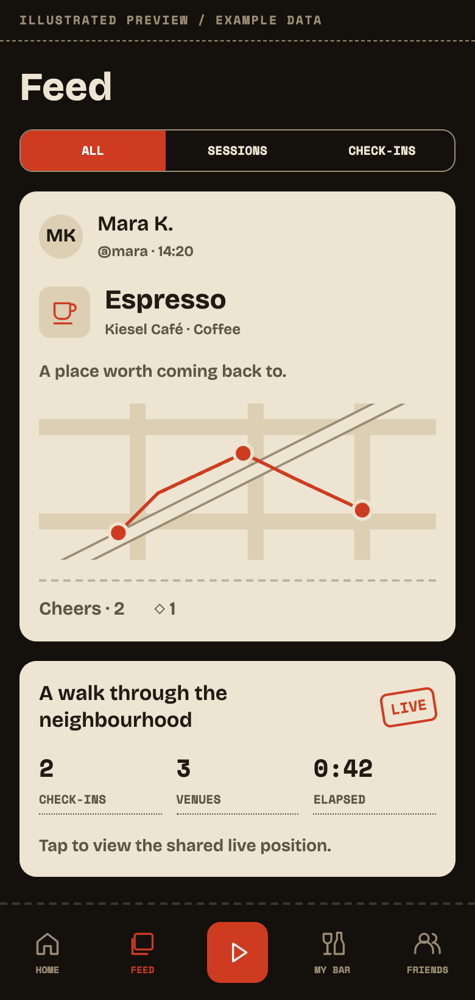
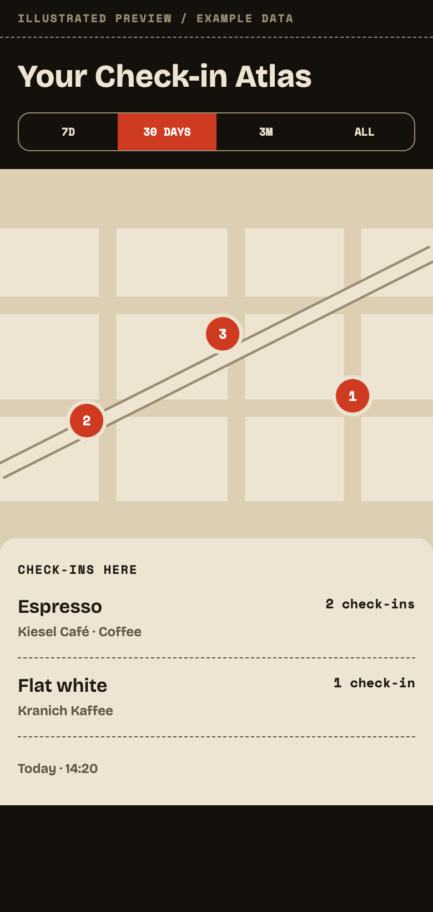
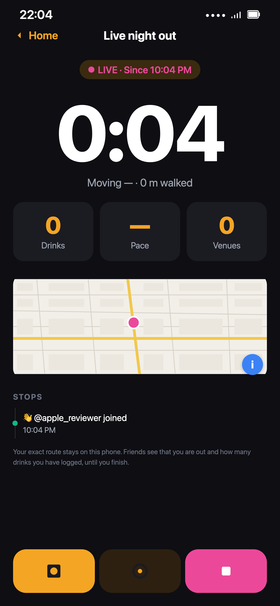

Discover places.
Track your route.
Discover places as you walk. CheersOida records your route, recognises venue stops, and keeps your check-ins together on a map. Share the outing with friends, then revisit it in your Atlas.
Currently in closed preview
Android and iOS access is by invitation. Email cheers@cheersoida.app to join and receive the installation steps for your device.
- You'll receive an email from Apple with a TestFlight invite.
- If you don't already have it, install the free TestFlight app from the App Store.
- Tap View in TestFlight in the invite email — CheersOida appears in your TestFlight app.
- Tap Install. The app lands on your home screen like any other app.
- You'll receive an email with a link to the Google Play test listing.
- Open the link on your Android phone and tap Become a tester.
- Once accepted, CheersOida installs like any other Play Store app.
- Updates roll out automatically — no further action needed.
Explore, stop, remember
Start a route, let the stops accumulate, and keep a record of the places you visit.
A record of places, not just a route
Automatic venue stops, a personal check-in map, and friends along the way.
Inside CheersOida
Illustrated previews of the current visual style, using example content. These are not device screenshots.



Questions
How tracking, sharing, and your data actually work.
What data does the app use?
An account, profile details, route points while a session is active, check-ins, optional photos and notes, friend connections, and notification tokens. Live sharing also uses a replaceable location point with a timestamp and accuracy. See the privacy page for visibility, image links, providers, and deletion.
What can friends see while I am out?
New sessions share your latest position with accepted friends by default. Turn this off in the live screen for that session; each new session starts with sharing on again. Friends see the latest point, its age, and GPS accuracy—not a playback of your full live route. A point is marked stale after one minute and hidden after five. When online, switching sharing off or finishing removes it. If you stop offline, no new positions are sent and the last shared point expires within five minutes. Group participants can also receive latest positions for group features. Finished routes are available to accepted friends.
Will every venue visit be detected?
Not always. Arrival detection looks for repeated GPS fixes and time spent near a known venue. Poor reception, closely spaced venues, or missing map data can affect the result. You can add a missing venue, but there is no guarantee that every stop will be recognised.
Does tracking continue with the screen off?
During an active session, tracking can continue in the background with your permission. Android uses a visible foreground service; iOS shows its location indicator. The app requests foreground/“While using” permission, not “Always”. Tap Stop to end session tracking. Check-ins can separately use your location when you choose to log one.
What works without a connection?
After a session has started, route points are stored locally. Check-ins and photo uploads can wait in the pending queue and retry when you reconnect. Starting a new session, live sharing, friend actions, new map tiles, and venue downloads require connectivity. Indoor or underground GPS reception can still be poor.
How much battery does tracking use?
An active route uses GPS, background processing, and sometimes the network. Battery use varies with your phone, reception, and session length; there is no fixed consumption estimate. Tap Stop when you finish.
Can I clear my activity without deleting my account?
Yes. Profile → Settings → Delete all my data removes activity history, route points, check-in photos, and the Cheers and messages attached to your content, while retaining your account, profile, friends, and notifications. Delete account also removes the account and profile. Cleanup needs a connection and may need a retry; it is not complete until the app confirms it. Email cheers@cheersoida.app if you cannot access your account.
Get in touch
Report an app problem, ask about access, or get help with your account.
For account details or diagnostic logs containing personal information, use email rather than a public GitHub issue.